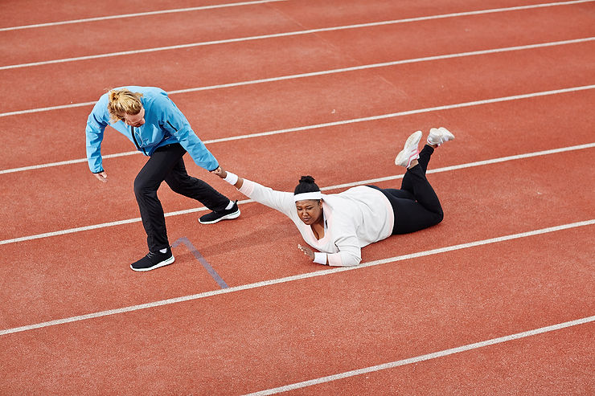
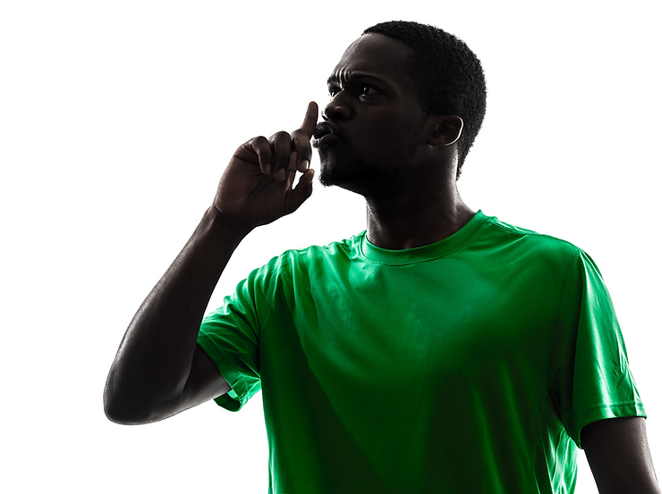

O momento histórico em que nos encontramos coloca-nos diante de dilemas, cuja complexidade é capaz de dissolver esperanças ingênuas e soluções provisórias. Dentro desse conjunto de dilemas, o racismo talvez seja o que mais tem ocupado a centralidade do debate público, uma vez que as suas formas de manifestação parecem se multiplicar, sem encontrar maiores adversários pelo caminho. Ancorados à melhor definição do termo, sabemos que o racismo compreende um sistema que organiza hierarquicamente as relações sociais, exaurindo possibilidades de reconhecimento, naturalizando processos de extermínio, exploração, alienação, desumanização e adoecimento psíquico, reproduzindo-se numa relação simbiótica com a modernidade e suas instituições.
Embora represente um campo de disputa fundamental à emergência do reconhecimento às diferenças, o esporte moderno, especialmente a sua versão profissionalizada e espetacular, há muito vem se estabelecendo como um terreno fértil à reprodução e atualização de formas de desumanização e alienação, com base no racismo. Uma dessas formas, aparentemente imperceptível, se refere à invisibilização e asfixia social das vítimas.
Antes de entrarmos mais detalhadamente neste subtema, importa recuperar algumas categorias teóricas, sem as quais será impossível apreender a complexidade do nosso dilema histórico. Conforme salientou Frantz Fanon, “estudar as relações entre racismo e a cultura é levantar a questão da sua ação recíproca”, tendo em vista que: “se a cultura é o conjunto dos comportamentos motores e mentais nascido do encontro do homem com a natureza e com o seu semelhante”, logo, é possível dizer que “o racismo é, sem sombra de dúvida, um elemento cultural”. Em outras palavras, falamos de um elemento que não se manifesta solto, descolado da cultura, mas compondo e dando forma a ela. Fanon salienta que “há culturas com racismo e culturas sem racismo”[1], contudo, não é este o caso da cultura esportiva moderna, por diversas razões históricas, das quais não podemos dar conta integralmente. Em resumo, esporte e violência racial desenvolvem-se no interior do chamado “processo civilizatório” protagonizado pelas forças colonialistas europeias e norte-americanas. Processo que – dentre outras coisas – representou a destruição, quando não a marginalização de sistemas e identidades culturais inteiros, concebidas como inferiores.
Tendo se autodeclarado nascedouro da razão, da cultura e humanidade legítimas, o Ocidente, com sua representação burguesa e colonial, deu forma política e juídica à reprodução da invisibilidade e silenciamento das culturas e corpos não brancos. Primeiro durante a construção do modo de produção escravista, onde a exploração dos sujeitos de pele negra (especialmente) baseou-se não só na sua transformação em corpo-mineral, corpo-mercadoria e corpo-moeda, mas serviu de base à construção de todo uma gramática, economia política, filosofia, antropologia, ciência e arte reforçadoras da crença de que os negros foram abandonados pela razão. É de todos conhecido o papel da história oficial e do desenvolvimento do direito liberal burguês na garantia da invisibilidade das vítimas da barbárie colonial, repetidamente narrada como processo civilizador. Mas não é tão conhecido, contudo, o fato de que o esporte moderno também participou desse processo, estabelecendo-se compulsoriamente nos territórios que iam sendo ocupados pelos brancos[2].
Também nunca é demais recordar que dentre as características distintivas desse esporte de sobrenome moderno destacam-se o secularismo, a “igualdade” entre participantes, a burocratização, a especialização, a racionalização, a quantificação e a obsessão com o recorde [3]. Embora nenhuma dessas características escape à crítica da modernidade, elas se estabelecem no esporte de modo quase incontestável, a ponto de seus ideólogos assumirem que o fenômeno em questão se desenvolve de forma autônoma, imune ao assédio capitalista e às querelas da vida política e ideológica. Para esse grupo de entusiastas, o esporte moderno representa “o reino da técnica”, e a técnica, por sua vez, se distingue pela sua “neutralidade”[4]. Disso resultará a ideia de que violências tais como o racismo não são subprodutos da cultura esportiva, mas de relações interpessoais das quais o esporte compreenderia apenas um “cenário”. Seguindo esse raciocínio, não haveria nada no esporte, em sua estrutura nuclear, que precise ou se permita ser alter, mas apenas os indivíduos com seus vícios e maldades. Há quem fielmente acredite que o próprio esporte seja o remédio para a cura das doenças sociais.
Ancorada à ponderação de Fanon, nossa reflexão, por outro lado, defende a tese de que o esporte, tal como configurado, foi e tem sido instrumento de reprodução de racismos, bem como das vítimas invisibilizadas e silenciadas. Secularizado, este sistema de práticas competitivas espetacularizadas abdica ao reconhecimento de gestos e corporeidades que comunicam outras visões de mundo. Retoricamente representado como terreno da igualdade, não se permite interpelar à luz do exame da realidade. Burocratizado, se estabelece como estrutura suficientemente autônoma, rígida e pouco afeita à cultura democrática. Racionalizado, submete-se tão somente aos interesses do modo de produção vigente, que agora se serve do próprio esporte (na forma dos megaeventos) para suspender soberanias populares e instituir um eficiente sistema de transferência de riqueza de periferias globais para países centrais [5]. Orientado à quantificação e superação de recordes, terá muita dificuldade para enxergar e compreender as dores decorrentes desta orientação. Em outras palavras, estamos falando de um sistema cultural que tem nos oferecido pouco ou quase nenhum espaço ao cultivo da alteridade e do reconhecimento.

Obrigado a adaptar-se ao instrumento-esporte, o corpo, de forma geral, sofre em silêncio, tornando-se, conforme analisa Jean-Marie Brohm, “escravo de uma ideia fixa”. Sua comodificação compreende desde logo um signo do pacto informal de silêncio. Pacto cuja informalidade possibilita expressões espasmódicas (quase sempre retalhadas) de humanidade, à exemplo do grito de cansaço da ginasta afro-americana Simone Billes, do basta antirracista do goleiro Mário Lúcio Duarte Costa, Aranha, e da carta-denúncia publicada pelo futebolista alemão, Antonio Rüdiger, intitulada “Esta carta não vai acabar com o racismo no futebol”.
Em seu texto, Rüdiger reforça a tese aqui apresentada de que a configuração contemporânea do esporte não só pode fazer muito pouco em relação às suas contradições internas, como compreende um sistema hábil em reproduzir silêncios relacionados à violência racial. Ao lembrar da humilhação racista que sofreu durante um jogo em 2021, o atleta argumenta que:
Eles [torcedores] estavam me chamando de n****. Gritavam: “Vá se foder, vá comer uma banana”. Cada vez que eu tocava na bola, eles faziam grunhidos de macaco […] não foi o primeiro ato racista que sofri, mas, certamente, o pior. Foi ódio real. Você sabe disso quando vê nos olhos deles. No momento, não reagi. Eu não saí do campo. Não queria dar a eles esse tipo de poder. Mas, por dentro, não importa o quão forte seja, se você é um ser humano com um coração batendo, ficará marcado por isso. Sempre que algo assim acontece, como o mundo do futebol reage? As pessoas dizem: “Ahhh, é tão terrível”. Os clubes e os jogadores postam uma pequena mensagem no Instagram: “Chega de racismo!!!”. Todos agem como se fossem ‘apenas alguns idiotas’. Há uma investigação, mas nada acontece. De vez em quando, temos uma grande campanha nas redes sociais, todo mundo se sente bem consigo mesmo e, então, voltamos ao normal. Nada muda realmente. Por que a imprensa, os torcedores e os jogadores se juntaram para acabar com a Superliga em 48 horas, mas, quando há abusos racistas evidentes em um estádio de futebol ou online, é sempre “complicado”? Talvez porque não sejam apenas alguns idiotas nas arquibancadas. Talvez porque vá muito mais a fundo [6].
Rüdiger parece convicto de que sua voz e dor, embora “livres” para se manifestar, nada podem fazer diante de um fato naturalizado. O racismo encontra-se de tal maneira amalgamado ao esporte moderno, que sua violência já se tornou parte constitutiva do espetáculo. A forma como o gozo dos espectadores se serve da humilhação pública do negro em campo, parece remontar à época dos Human Zoos [7], no século XIX, bem como os pressupostos que justificavam a celebração olímpica, em Saint Louis, 1904, dos chamados Dias Antropológicos. Nessa ocasião, pessoas não brancas foram submetidas a provas esportivas olímpicas, para darem aos organizadores e ao público “evidências científicas” de que eram racial e intelectualmente incapazes de performa-las [8]. Construídos para reforçar a tese da superioridade de uma identidade racial branca sobre a não branca, os Human Zoos e os Dias Antropológicos não são eventos consignados ao tempo cronológico, mas processos históricos e produtos culturais formadores de subjetividades racistas, cuja força residual, no contexto esportivo contemporâneo, pode ser observada em cânticos racistas em estádios, tramas institucionais de contenção do contingente negro em clubes e seleções [9], discursos supremacistas em redes sociais [10], narrações esportivas [11] e livros de grande circulação no circuito acadêmico [12].

Essa configuração – se a pudermos classificar como “sociabilidade esportiva racista” – notabiliza-se por produzir processos de invisibilização e silenciamento dos alvos principais da especulação e violência racial. Embora se encontre no centro do conflito, os grupos vitimados geralmente não encontram possibilidades de dar voz, texto e sentido particular ao que sentem. Vivem, assim, uma espécie de “duplo sofrimento”, cultivado à sombra da visibilidade, também espetacular, conferida aos agentes do racismo. Não há como negar que a Justiça tem sido cada vez mais célere em sua tarefa de condenar atos racistas no esporte. O que não significa dizer que o Direito Desportivo tem se ocupado ou compreendido adequadamente a situação das vitimadas da violência no esporte. Vítimas que mesmo não se furtando de denunciar o racismo ou assumir a bandeira do antirracismo, pouco podem fazer solitariamente. “Passei a ser o encrenqueiro, o abusado, depois que denunciei o caso de racismo. Fui perseguido em alguns estádios por aquela situação”, disse Aranha em entrevista à CNN, lembrando dos desdobramentos do seu posicionamento antirracista após ter sofrido violência racial durante partida contra o Grêmio de Porto Alegre, em 2014. Aranha argumenta que a pessoa que decide se posicionar contra o racismo no Brasil acaba se tornando um alvo de violência racial continuada, tanto mais eficiente em sua tarefa de exaurir resistências e transformar a vítima em vilão e monstro. “Comecei a ter dificuldades profissionalmente, já que ninguém quer ‘trazer o problema para casa’. Muitos me acusam de usar o racismo para me promover profissionalmente, sendo que deixei de jogar por conta disso”, reforçou [13]. Exemplos que reforçam a tese de que a configuração moderna do esporte é refratária às políticas de reconhecimento encontram-se espalhados por toda parte.
“Ela não pode falar disso. Está proibida. A seleção não é lugar para falar dessas coisas. Ela não pode falar desse tipo de coisa. Ela não pode falar de política”, disse o treinador-chefe da seleção de Boxe, em 2019, impedindo com que Jucielen Romeu respondesse a perguntas de jornalistas relacionadas à questões feministas e ao racismo. Embora esses temas fazem parte da formação e identidade da boxer, ela teve cerceado o seu direito de participar do debate público, como se a própria sociabilidade esportiva pertencesse a outro domínio que não o do direito individual e da liberdade de expressão. Sem maiores consequências, o gesto proibitivo fez prevalecer a falsa consciência de que esporte e política “não se misturam” [14]. Reverberada por agentes de imprensa, dirigentes, presidentes de confederações e comitês olímpicos, a ideia de que o esporte não deveria se misturar com política não visa a negação da política em si, mas sua limitação às esferas institucionais de poder, conforme ponderou Katia Rubio [15]. Em co-autoria com os professores Sérgio Settani Giglio e Marcel Tonini, a autora também se debruça sobre o caso de Demirval Lima, mais conhecido no contexto do futebol como Baiano, vítima de violência racial massiva e continuada, quando jogava pelo Boca Juniors da Argentina. Sob vistas grossas do clube argentino, o sofrimento inaudito de Baiano teve início com as repercussões dos xingamentos racistas proferidos pelo jogador Leandro Desábato contra Edinaldo Batista Libanio, Grafite, durante jogo válido pela Copa Libertadores da América, em 2005. Longe das câmeras, o corpo de um atleta brasileiro serviu a uma espécie de ritual de tortura prolongado, nada distante do que experimentavam os negros no cotidiano da escravidão e das colônias.
Todo mundo começou a me comparar com o Grafite, me chamavam de “negro de m…”, “negro disso”, “negro daquilo”, cuspiam na minha cara… Escarraram muitas vezes na minha cara, meus próprios adversários. Dentro do vestiário do Boca Juniors, quando eu chegava, alguns jogadores cuspiam no chão, me chamando de “negro disso”, “negro daquilo”, “irmão do Grafite”. Aí, eu perdi a vontade de jogar no Boca Juniors e retornei ao Palmeiras no final de 2005 novamente [16].
As centenas de exemplos que poderiam ser aqui elencados falam de um processo sistêmico de desumanização racista no esporte, o qual não se limita à violência flagrante contra negros, mas se desdobra nas estratégias de silenciamento às vítimas, interditando a possibilidade de compreensão mais rigorosa sobre os desdobramentos psíquicos e sociais do racismo. Em larga medida, a sociabilidade esportiva, orientada ao espetáculo midiático e às relações de mercado, torna-se um terreno fértil à reprodução de um circuito de sofrimento, notadamente resistente à lei. Nesse sentido, cabem as perguntas: qual o papel dos campos de conhecimento que atuam neste cenário? O que pode a Psicologia do Esporte? A escuta terapêutica às vítimas do racismo no esporte é suficiente? Será possível superar o racismo no esporte sem uma crítica radical às categorias que o constituem, e sem levar em conta as formas de opressão de gênero e classe a elas associadas? O que pode a Educação Física, a História, a Sociologia, a Filosofia e a Psicologia do Esporte Brasileira neste exato momento em que são convocadas a oferecer respostas?
O quadro aqui apresentado sugere que o combate ao racismo não dever se limitar à higienização moral dos espaços de prática competitiva e discursiva, mas compreender mudanças capazes de submeter o sistema esportivo aos interesses emancipatórios da sociedade. E sendo o esporte moderno uma construção histórica e também teórica, a possibilidade da sua transformação encontra-se na capacidade coletiva de produção de uma nova história e teoria do esporte.
[1] FANON, Frantz. Racismo e Cultura. In: FANON, Frantz. Em defesa da revolução africana. Lisboa: Terceiro Mundo, 1980, p. 36.
[2] MBEMBE, Achille. Crítica da razão negra. Lisboa: Antígona, 2014.
[3] GUTTMANN, Allen. Games and empires: modern sport and cultural imperialism. New York: Columbia University Press, 1994.
[4] BROHM, Jean-Marie. Sociologia política del deporte. México: Fondo Econômico, 1982.
[5] AFIUNE, Giulia. “Eles estão roubando vocês”. Agência Pública, 08 de maio de 2014. Disponível em: https://apublica.org/2014/05/eles-estao-roubando-voces/, acesso em 30 de maio de 2022.
[6] RÜDIGER, Antonio. Esta carta não vai acabar com o racismo no futebol. In: The Players Tribune, 27 de maio de 2021. Disponível em:
[7] Human Zoos: A Shocking History of Shame and Exploitation. In: CBC. Disponível em: https://www.cbc.ca/natureofthings/features/human-zoos-a-shocking-history-of-shame-and-exploitation
[8] DEUSAHUT, Fabrice. Los juegos antropologicos de Saint Louis. Revista Brasileira de Ciências do Esporte. v. 1, n. 4, pp. 809-823, 2011.
[9] FREITAS JUNIOR, Miguel Arcanjo; Ribeiro, Luiz Carlos. Vitórias e derrotas de um futebol mestiço: algumas reflexões sobre a questão racial no Brasil. Emancipação, v. 12, n. 2, pp. 297-309, 2012.
[10] TRALCI FILHO, Marcio; SANTOS, Alessandro de Oliveira. O discurso da supremacia branca e o esporte: um estudo a partir de textos e comentários na internet. Movimento, [S. l.], v. 23, n. 1, pp. 229–248, 2017.
[11] SMITH, Rory. ‘Inteligentes’ ou ‘fortes’: estudo revela preconceito nas transmissões de futebol. In: Terra, 02 de julho de 2020. Disponível em: https://www.terra.com.br/esportes/futebol/inteligentes-ou-fortes-estudo-revela-preconceito-nas-transmissoes-de-futebol,5ff1362da8dd4ec1fce9d5e5eaf4529c342lep8p.html, acesso em 31 de maio de 2022.
[12] ENTINE, J. Taboo: why black athletes dominate sports and why we’re afraid to talk about it. New York: Public Affairs, 2000.
[13] É perigoso para o jogador de futebol se posicionar no Brasil, diz Aranha. In: CNN Brasil, 03 de junho de 2020. Disponível em:
https://www.cnnbrasil.com.br/nacional/e-perigoso-para-o-jogador-de-futebol-se-posicionar-no-brasil-diz-aranha/, acesso em 31 de maio de 2022.
[14] VECCHIOLI, Demétrio. Medalhista do boxe é proibida de falar sobre racismo e empoderamento. In: UOL, 02 de agosto de 2019. Disponível em: https://www.uol.com.br/esporte/ultimas-noticias/2019/08/02/medalhista-do-boxe-e-proibida-de-falar-sobre-racismo-e-empoderamento.htm, acesso em: 31 de maio de 2022.
[15] RUBIO, Katia. Argumento de que esporte e política não se misturam só vale para quem tem poder. In: Folha de São Paulo, 29 de janeiro de 2021. Disponível em:
[16] GÍGLIO, Sérgio Sattini; TONINI Marcel Diego; RUBIO, Katia. “Do céu ao inferno”: a história de Baiano no Boca Junior e os racismos no futebol. Projeto História, São Paulo, n. 49, pp. 259-292, 2014.
Prof. Dr. Neilton Ferreira Júnior
Doutor em Ciências pela Escola de Educação Física e Esporte da Universidade de São Paulo. Mestre em Ciências pela mesma Universidade. Graduado em Educação Física pela Universidade Presbiteriana Mackenzie. Membro da Academia Olímpica Brasileira, do Grupo de Estudos Olímpicos (USP), do GT de Relações Etnico-Raciais do Congresso Brasileiro de Ciências do Esporte (CBCE) e da equipe gestora da Associação Brasileira de Psicologia do Esporte (2022-2023). Consultor técnico em projetos de esporte para a rede SESC (2019-2022). Coordenador do Núcleo de Esporte e Lazer do Centro Educacional Unificado Butantã (2014-2017). Estuda e pesquisa as Dimensões Raciais e Laborais no Esporte e o Movimento Olímpico Moderno à luz de abordagens críticas. Administra o Blog/Canal ‘Esporte, Cultura e Luta de Classe: Interfaces’ (https://esporteculturaelutadeclassein.blogspot.com/).